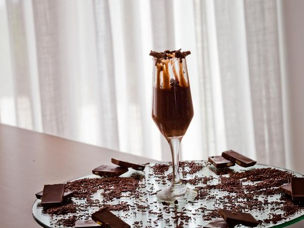

Sobremesas
Pudim de Leite Condensado:

Ingredientes:
Massa:
- 3 latas de leite condensado.
- 1 xícara de leite de vaca.
- 4 ovos inteiros.
Calda:
- 3 xícara (chá) de açúcar.
- 1/3 de xícara (chá) de água.
Modo de Preparo:
Calda:
- Em uma panela, misture a água e o açúcar até formar uma calda.
- Unte uma forma com a calda e reserve.
- Deixe esfriar.
- Em uma outra tigela, misture 1 caixa de creme de leite e 1/2 de leite condensado.
Massa:
-Bata todos os ingredientes no liquidificador e despeje na forma caramelizada. Ele vai dar uma reação e engrossar.
- Leve para assar em banho-maria por 40 minutos.
- Desenforme e sirva.
Mousse de Chocolate:

Ingredientes:
- 3 ovos.
- 800 g de chocolate meio amargo.
- 4 colheres (sopa) de açúcar.
- 1 lata de creme de leite.
Modo de Preparo:
- Bata as gemas até dobrarem de volume.
- Junte o açúcar e continue batendo.
- Derreta o chocolate e acrescente à gemada.
- Junte o creme de leite, batendo sempre.
- Por fim, acrescente as claras em neve (bem batidas mesmo), misturando rapidamente na batedeira.
- Leve à geladeira e sirva-se, deliciando o melhor mousse e mais simples de fazer! .